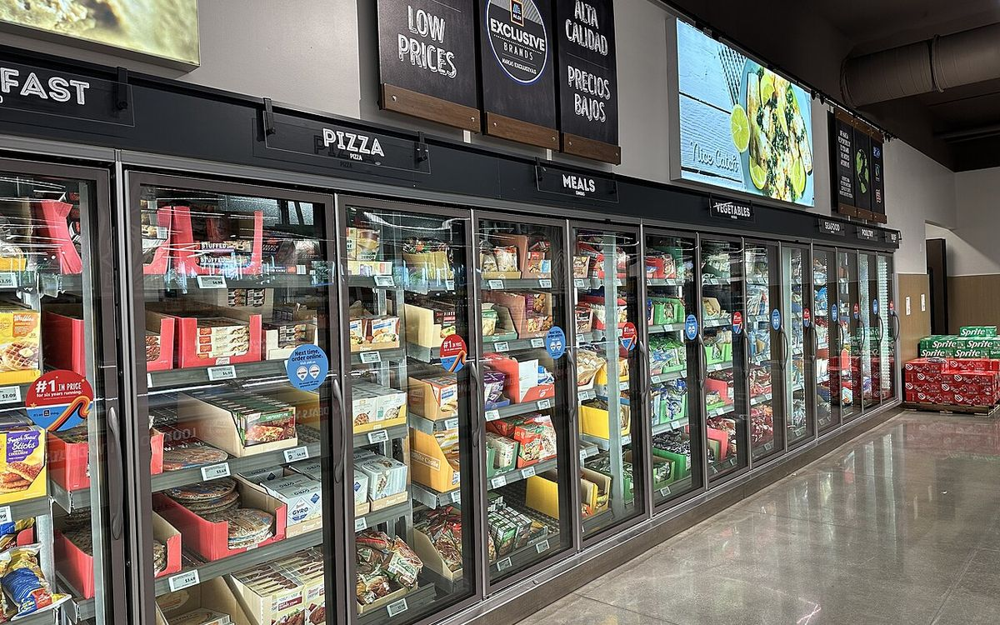

Improve a draft
Give AI-assisted content a proper editorial review before you publish.
Use the publishing checklist →Content Creation • SaaS and Automation • Tech News
Practical guides that take a post from idea to published page, honest comparisons of the tools behind the work, and tech news explained in plain words.
Writing, video, images and audio. Start with clear information and practical workflows.
Explore content creation ↗02 / SaaS and AutomationCompare business software, automation and startup resources before you commit time or money.
Explore SaaS and Automation ↗Pick the job, go straight to the useful page.
Give AI-assisted content a proper editorial review before you publish.
Use the publishing checklist →Research primary sources, keep a claim sheet, and build an outline that holds up.
Learn to outline →Work through separate editing passes, with a real before and after.
Do the editing pass →Follow eight steps, with one real post carried through every step.
Follow the workflow →Understand app integrations, plan access and costs before you build.
Understand the connections →Add your subscriptions and see the monthly, annual and combined totals.
Open the calculator →Longer explanations, chosen for useful reader outcomes.
Content Creation / Writing and Blogging
Eight steps, from idea to published post, shown with one real post carried through every step on this site.
Read the guideContent Creation / Writing and Blogging
How to research primary sources, keep a claim sheet, and outline, with the full annotated outline of a real post.
Read the guideContent Creation / Writing and Blogging
How to edit AI generated content in separate passes, with a real before and after of the same draft, every edit explained.
Read the guideImage: Anthropic official press kit
SaaS and Automation / Startup resources
What the program offers, the earlier eligibility rules, and why new applications are currently closed.
Read the guideImage: OpenAI official press kit
SaaS and Automation / Platform distribution
Understand app integrations, eligible ChatGPT-plan access, costs and payment restrictions before building.
Read the guide
Image: Google official press kit
Content Creation / Writing & publishing
A practical editing process for accurate, useful AI-assisted content, with a worked example.
Read the guideWorking utilities, free to use, no signup.
Add your subscriptions and see the monthly total, the annual total, and the combined total for a year. Your numbers stay in your browser.
Open the calculator →Tech news, explained in plain words. Every story links its original source.

France
Your supermarket freezer is not supposed to be a target in a fight between countries. In France, it became one.
Read the storySonicWall / VPN security
Your VPN asked for two proofs of identity. This flaw let an attacker skip the second one entirely.
Read the storyWordPress / Website security
The most dangerous moment for a WordPress site is not when it is running. It is when it is updating.
Read the storyAmadeus / Travel bookings
You did not lose money in this breach. That is exactly why the next email about your booking is dangerous.
Read the storyIris Plaza / Online shopping
7.7 million people. That is the number at the centre of Japan's biggest shopping breach this month, and passwords were in the mix.
Read the storyOpenAI / Images
Good news if you like making things with AI. OpenAI launched Images 2.6 on 4 November, and the best part is the price. It is on every subscription tier, not only the expensive plan. So you can try it without upgrading. It is available globally in ChatGPT, on desktop, mobile, and web.
Read the storyGoogle / Video
Short video just got cheaper, and you can now edit it by talking to it.
Read the story
Google DeepMind / Encryption
No, your encryption is not broken. But AI just did a job that used to need a career of intuition, and that changes the clock.
Read the storyWe explain the decision before recommending a purchase. Official sources, checked dates and clear limits belong beside every changing claim.
How we work →